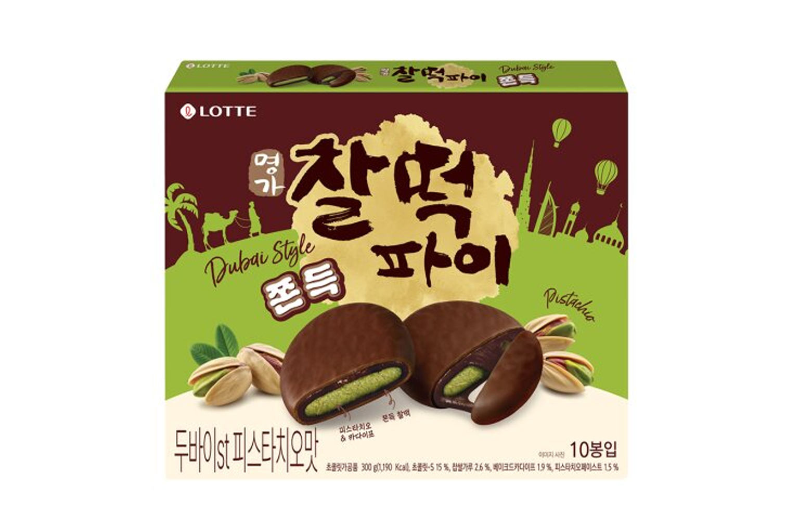

찰떡파이
롯데 찰떡파이 — 쫀득한 찰떡 속 초코크림, 겉은 초콜릿 코팅의 스테디셀러 과자.
찰떡파이는 롯데웰푸드(명가)의 상온 과자로, 쫄깃한 찰떡 안에 초코크림을 넣고 겉을 초콜릿으로 감싼 제품입니다. SPC 빚은 매장의 냉장 ‘찰떡담은파이’와는 다른, 편의점·마트 과자 코너 상품입니다.
편의점·이마트·홈플러스 등에서 낱개·멀티팩으로 쉽게 구합니다. 상온 보관이 가능해 기념품으로 가져가기 좋고, 일본 관광객 사이에서도 인기가 있습니다.
찰떡파이는 롯데웰푸드(명가)의 상온 과자로, 쫄깃한 찰떡 안에 초코크림을 넣고 겉을 초콜릿으로 감싼 제품입니다. SPC 빚은 매장의 냉장 ‘찰떡담은파이’와는 다른, 편의점·마트 과자 코너 상품입니다.
편의점·이마트·홈플러스 등에서 낱개·멀티팩으로 쉽게 구합니다. 상온 보관이 가능해 기념품으로 가져가기 좋고, 일본 관광객 사이에서도 인기가 있습니다.
사는 팁
구매 팁 포장에 ‘찰떡파이’·롯데(명가) 표기를 확인하세요. 공항·관광지보다 대형마트 묶음이 대체로 저렴합니다.